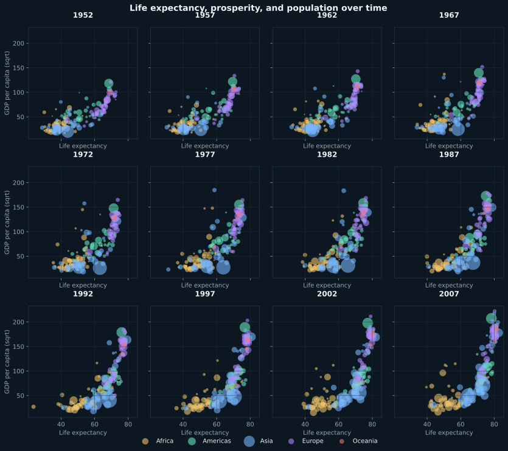
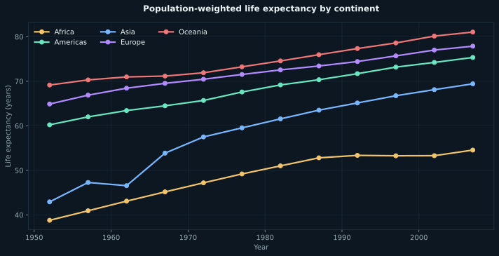

What the visualization reveals
Life expectancy increasedThe population-weighted global average rose from 48.9 years in 1952 to 68.9 years in 2007.
Prosperity and longevity moved togetherAcross the full dataset, life expectancy and GDP per capita had a 0.69 correlation.
Geographic gaps remained visibleColor and faceting make persistent differences between continents visible alongside broad global improvement.
Rendered visual from the original R analysis
This figure reproduces the Gapminder transformation and the original ggplot mappings across every year in the dataset.

Companion summary view
This trend line is an additional summary derived from the same filtered Gapminder data. It is clearly separated from the original submitted visualization.

Method
Loaded Gapminder observations, excluded Kuwait as specified in the source, mapped life expectancy to the horizontal axis, GDP per capita to a transformed vertical axis, continent to color, population to point size, and year to repeated views.
Original source
The complete project source is preserved below so reviewers can inspect the transformations, model logic, and visualization code.
View complete R / Quarto source
---
title: "Global Life Expectancy"
author: "Kevin Murray"
date: "`r format(Sys.time(), '%B %d, %Y')`"
execute:
keep-md: true
warning: false
format:
html:
code-fold: true
code-tools: true
---
```{r, message=FALSE, warning=FALSE}
library(gapminder)
library(tidyverse)
```
```{r, message=FALSE, warning=FALSE}
df <- gapminder::gapminder |>
filter(country != "Kuwait")
```
```{r, message=FALSE, warning=FALSE}
ggplot(df, aes(x=lifeExp, y=gdpPercap, color= continent, size= pop)) + geom_point() + facet_wrap(vars(year), nrow=1) + scale_y_continuous(trans = "sqrt")+ theme_bw() + labs(x= "Life Expectancy", y= "GDP per Capita", size= "Population (100K)") + scale_size_continuous(
labels = function(x) format(x / 1e5, scientific = FALSE))
```